| Thông tin | Nội dung |
|---|---|
| Giảng viên hướng dẫn | ........................................................ |
| Nhóm sinh viên | Bổ sung theo danh sách thực tế |
| Lớp | ........................................................ |
| Thành phố | ........................................................ |
| Năm học | 2026 |
Bản báo cáo được xây dựng theo mã nguồn và chương trình chạy trong môi trường phát triển.
Nhu cầu xem phim tại rạp gắn với việc tìm kiếm phim, chọn cụm rạp, chọn suất chiếu và đặt ghế. Khi các thao tác này được thực hiện qua nhiều kênh rời rạc, người dùng mất thời gian kiểm tra lịch và có thể chọn nhầm suất hoặc ghế. Hệ thống CineTicket được xây dựng như một website tập trung các bước đó trong cùng một giao diện.
Đề tài tập trung vào quy trình từ tra cứu danh mục phim đến đặt giữ chỗ, thanh toán mô phỏng và cấp vé. Ứng dụng có giao diện phía người dùng và các trang quản trị phục vụ cập nhật dữ liệu rạp. Kiến trúc tách frontend React và backend Spring Boot, trao đổi dữ liệu qua API REST, lưu trữ trong MySQL.
Báo cáo trình bày công nghệ, yêu cầu và phân tích thiết kế; mô hình dữ liệu; cách cài đặt các trang; kết quả khởi chạy và ảnh chụp từ chương trình. Nội dung phân biệt các chức năng đã có trong mã nguồn với hướng mở rộng. Thông tin sinh viên và giảng viên được để trống để nhóm điền theo thực tế.
Báo cáo gồm phần mở đầu, ba chương nội dung, phần kết luận và phụ lục hướng dẫn chạy. Các mục được trình bày liên tục; số trang được Word tự phân bố theo nội dung thực tế.
| Phần | Nội dung |
|---|---|
| Mở đầu | Bối cảnh, mục tiêu và phạm vi |
| Chương 1 | Tìm hiểu công nghệ sử dụng |
| Chương 2 | Phân tích và thiết kế hệ thống |
| Chương 3 | Cài đặt, giao diện và kết quả chạy |
| Kết luận | Kết quả đạt được, hạn chế và hướng phát triển |
| Tài liệu tham khảo | Tài liệu kỹ thuật và mã nguồn |
| Phụ lục | Hướng dẫn chạy và ảnh giao diện quản trị |
Chương 1 trình bày nền tảng ngôn ngữ và thư viện. Chương 2 mô tả phạm vi nghiệp vụ, tác nhân, luồng bán vé trực tuyến và tại quầy, kiến trúc và dữ liệu. Chương 3 liên hệ thiết kế với các màn hình, API và cách vận hành.
| Từ viết tắt | Ý nghĩa | Sử dụng trong đề tài |
|---|---|---|
| API | Application Programming Interface | Giao diện trao đổi giữa frontend và backend |
| REST | Representational State Transfer | Quy ước thiết kế các endpoint HTTP |
| JWT | JSON Web Token | Token xác thực truy cập |
| JPA | Jakarta Persistence API | Ánh xạ đối tượng Java với dữ liệu quan hệ |
| ORM | Object Relational Mapping | Kỹ thuật ánh xạ lớp và bảng |
| CRUD | Create, Read, Update, Delete | Thêm, xem, sửa, xóa dữ liệu |
| UI / UX | User Interface / User Experience | Giao diện và trải nghiệm người dùng |
| RBAC | Role Based Access Control | Phân quyền theo vai trò |
| DTO | Data Transfer Object | Đối tượng dữ liệu nhận hoặc trả qua API |
| FE / BE | Frontend / Backend | Giao diện web / xử lý phía máy chủ |
Tên trạng thái trong mã nguồn được lưu dạng enum chuỗi, ví dụ NOW_SHOWING, PENDING, SUCCESS và VALID. Quy ước viết hoa giúp dữ liệu trạng thái thống nhất khi trao đổi giữa frontend và backend.
| Mã hình | Tên hình |
|---|---|
| Hình 1.1 | Kiến trúc tổng thể CineTicket |
| Hình 2.1 | Phân rã chức năng hệ thống |
| Hình 2.2 | Use case tổng quát |
| Hình 2.3 | Trình tự đặt vé và thanh toán |
| Hình 2.4 | Hoạt động nghiệp vụ đặt vé |
| Hình 2.5 | Mô hình thực thể liên kết rút gọn |
| Hình 2.6 | Sơ đồ triển khai môi trường phát triển |
| Hình 3.1 | Trang chủ |
| Hình 3.2 | Danh mục phim |
| Hình 3.3 | Chi tiết phim |
| Hình 3.4 | Lịch chiếu |
| Hình 3.5 | Đăng nhập |
| Hình 3.6 | Chọn ghế và tạo đơn giữ chỗ |
| Hình 3.7 | Thanh toán thành công |
| Hình 3.8 | Vé điện tử sau thanh toán |
| Hình 3.9 | Kiểm tra vé tại quầy |
| Hình 3.10 | Dashboard quản trị |
| Hình 3.11 | Quản lý phim |
| Hình 3.6 | Chọn ghế và tạo đơn giữ chỗ |
| Hình 3.7 | Thanh toán thành công |
| Hình 3.8 | Vé điện tử sau thanh toán |
| Hình 3.9 | Lịch sử đơn hàng |
| Hình 3.10 | Hồ sơ khách hàng |
| Hình 3.11 | Nhân viên soát vé |
| Hình 3.12 | Quản lý phim |
| Hình 3.13 | Quản lý rạp, phòng và ghế |
| Hình 3.14 | Quản lý suất chiếu |
| Hình 3.15 | Quản lý người dùng |
| Hình 3.16 | Danh sách giao dịch trực tuyến và tại quầy |
| Hình 3.17 | Chi tiết đơn hàng tại quầy |
| Hình 3.18 | Dashboard quản trị |
| Hình 3.19 | Nhân viên chọn ghế và nhập thông tin khách tại quầy |
| Hình 3.20 | Vé QR phát hành sau khi thu tiền tại quầy |
Ảnh chụp giao diện được tạo trực tiếp từ trình duyệt Edge khi truy cập website trên localhost. Thứ tự ảnh đi theo luồng khách hàng, sau đó là luồng quản trị.
| Mã bảng | Tên bảng |
|---|---|
| Bảng 1.1 | Công nghệ và vai trò |
| Bảng 2.1 | Tác nhân của hệ thống |
| Bảng 2.2 | Yêu cầu chức năng |
| Bảng 2.3 | Yêu cầu phi chức năng |
| Bảng 2.4 | Quy tắc nghiệp vụ đặt vé |
| Bảng 2.5 | Thực thể và dữ liệu chính |
| Bảng 3.1 | Các trang giao diện người dùng |
| Bảng 3.2 | Các nhóm endpoint |
| Bảng 3.3 | Kết quả khởi chạy và giới hạn kiểm chứng |
Các bảng cấu trúc dữ liệu rút gọn theo các entity trong mã nguồn. Kiểu vật lý của cột do Hibernate tạo dựa trên kiểu Java, annotation và cấu hình cơ sở dữ liệu.
Nhóm điền thông tin cá nhân và tỷ lệ đóng góp dựa trên quá trình làm việc thực tế. Bảng dưới đây để sẵn vai trò minh họa, không gán tên hoặc khối lượng cho thành viên khi chưa có danh sách nhóm.
| STT | Họ tên / MSSV | Nội dung phụ trách | Tỷ lệ |
|---|---|---|---|
| 1 | Bổ sung | Phân tích nghiệp vụ, yêu cầu | .....% |
| 2 | Bổ sung | Backend, API, bảo mật | .....% |
| 3 | Bổ sung | Frontend và giao diện người dùng | .....% |
| 4 | Bổ sung | Thiết kế dữ liệu, kiểm tra luồng | .....% |
| 5 | Bổ sung | Báo cáo, hình ảnh, tích hợp | .....% |
Khi nhóm có ít thành viên hơn số dòng, xóa các dòng dư. Khi một thành viên phụ trách nhiều phần, ghi phần việc chính và phần hỗ trợ để bảng phản ánh đúng trách nhiệm.
CineTicket được xây dựng bằng các công nghệ mã nguồn mở và nền tảng phổ biến trong ứng dụng web. Backend viết bằng Java và Spring Boot; dữ liệu lưu trên MySQL; frontend dùng React với TypeScript. Hai phía kết nối bằng API HTTP trả JSON.
Việc chia lớp theo giao diện, bộ điều khiển, dịch vụ nghiệp vụ, repository và entity giúp mỗi phần có trách nhiệm rõ ràng. Frontend tập trung hiển thị và điều hướng. Backend kiểm tra quyền, dữ liệu đầu vào, trạng thái giao dịch và đọc ghi cơ sở dữ liệu.
Các lựa chọn công nghệ phù hợp với bài toán cần tài khoản, danh mục, quan hệ dữ liệu và giao dịch có trạng thái. Trong phạm vi đồ án, thanh toán được xử lý mô phỏng trong backend; hệ thống chưa kết nối cổng thanh toán thật.
Java là ngôn ngữ lập trình hướng đối tượng chạy trên JVM. Đề tài cấu hình Java 21 trong pom.xml. Các entity biểu diễn người dùng, phim, rạp, suất chiếu, đơn đặt vé, thanh toán và vé. Controller khai báo endpoint; service đảm nhiệm tác vụ nền; repository truy vấn dữ liệu.
Kiểu dữ liệu tĩnh giúp trình biên dịch phát hiện một số lỗi kiểu trước khi chạy. Các kiểu LocalDate, LocalDateTime và BigDecimal được dùng cho ngày phát hành, giờ chiếu và số tiền. Enum được dùng cho vai trò và trạng thái, giảm khả năng lưu giá trị tùy tiện.
Spring Boot khởi tạo ứng dụng với cấu hình tự động và máy chủ web nhúng. CineTicket dùng Spring MVC để nhận request HTTP, ánh xạ JSON sang DTO, gọi nghiệp vụ và trả kết quả. Các route tập trung dưới tiền tố /api; trang tài liệu API được cung cấp qua Springdoc/Swagger UI.
Dependency Injection giúp controller nhận repository và dịch vụ qua constructor. Annotation như @RestController, @RequestMapping, @GetMapping và @PostMapping mô tả tuyến API. @Valid kết hợp annotation Jakarta Validation để kiểm tra dữ liệu đầu vào trước khi xử lý.
Cấu hình kết nối cơ sở dữ liệu nằm trong application.properties và có thể được ghi đè bằng biến môi trường. Cấu hình này thuận tiện cho phát triển, nhưng thông tin bí mật phải được quản lý ngoài mã nguồn khi triển khai thật.
JPA cung cấp mô hình ánh xạ đối tượng Java tới bảng quan hệ. Hibernate là bộ hiện thực ORM được sử dụng khi ứng dụng khởi chạy. Repository kế thừa JpaRepository để có các thao tác lưu, tìm theo ID và truy vấn dựa trên tên phương thức.
Quan hệ ManyToOne thể hiện booking thuộc về user và showtime; room thuộc về cinema; showtime liên kết movie và room. Quan hệ ManyToMany giữa movie và genre được lưu qua bảng nối movie_genres. BookingSeat là thực thể trung gian gắn booking, showtime và seat, đồng thời lưu giá ghế và thời hạn giữ.
EntityGraph được sử dụng trên truy vấn danh mục phim để tải thể loại cùng phim, tránh lỗi lazy loading khi tuần tự hóa JSON sau khi phiên persistence đóng. Hibernate tự cập nhật cấu trúc bảng theo ddl-auto=update trong cấu hình hiện tại.
MySQL là hệ quản trị cơ sở dữ liệu quan hệ. Dữ liệu của ứng dụng hiện cấu hình vào database webbanvexemphim. Kết nối JDBC được thiết lập qua MySQL Connector/J. Mỗi entity chính tương ứng một bảng, các quan hệ được biểu diễn bằng khóa ngoại và bảng liên kết.
Các ràng buộc duy nhất trong mô hình ngăn lặp email, tên thể loại, tên phòng trong cùng rạp, mã vé, và một vé cho một booking seat. Ghế cũng có ràng buộc duy nhất theo phòng, hàng và số ghế. Index trên showtime_id và seat_id giúp truy vấn trạng thái giữ chỗ.
Trong môi trường phát triển, Hibernate được phép cập nhật lược đồ. Với môi trường sản phẩm, nên thay bằng công cụ migration có lịch sử phiên bản như Flyway hoặc Liquibase để thay đổi cấu trúc có kiểm soát.
React tổ chức giao diện thành các component có trạng thái riêng. Ứng dụng có các trang người dùng, component layout, context xác thực và các trang quản trị. React Router ánh xạ URL thành trang; AuthContext lưu token và người dùng hiện tại, đồng thời khôi phục phiên đăng nhập từ localStorage.
TypeScript mô tả kiểu Movie, Cinema, Showtime, Booking, Ticket và các kết quả API. Kiểu dữ liệu giúp trang sử dụng cùng cấu trúc response. Axios gom cấu hình base URL /api và tự gắn Bearer token vào request khi localStorage có token.
Tailwind CSS và các lớp tiện ích được dùng để xây dựng bố cục, màu sắc và trạng thái tương tác. Lucide React cung cấp biểu tượng. Vite chạy máy chủ phát triển frontend ở cổng 5173 và proxy /api sang backend cổng 8080.
API REST sử dụng phương thức GET để đọc, POST để tạo hoặc thực hiện thao tác, PUT/PATCH để cập nhật và DELETE để ẩn hoặc hủy theo nghiệp vụ. Dữ liệu request và response trao đổi bằng JSON; ngày dùng ISO YYYY-MM-DD, ngày giờ dùng LocalDateTime dạng ISO.
Khi đăng nhập thành công, backend phát JWT ký HMAC-SHA256. Frontend giữ access token trong localStorage và gửi trong header Authorization: Bearer. Token có thời hạn một giờ. TokenFilter xác thực chữ ký, tra cứu người dùng và chỉ cấp quyền nếu tài khoản còn ACTIVE.
Mật khẩu người dùng được mã hóa BCrypt. Quyền kiểm soát ở backend dựa trên vai trò ADMIN, MANAGER, STAFF hoặc CUSTOMER theo từng nhóm endpoint. Giao diện có ẩn/hiện menu theo vai trò, nhưng kiểm tra ở máy chủ mới là lớp bảo vệ bắt buộc.
| Công nghệ | Vai trò trong đề tài | Vị trí |
|---|---|---|
| Java 21 | Ngôn ngữ backend | src/main/java |
| Spring Boot / MVC | Khởi tạo ứng dụng và API HTTP | pom.xml, controller |
| Spring Security | Xác thực và phân quyền | config/SecurityConfig.java |
| JPA / Hibernate | ORM và thao tác dữ liệu | entity, repository |
| MySQL 8 | Lưu trữ dữ liệu quan hệ | application.properties |
| React / TypeScript | Giao diện tương tác | frontend/src |
| Vite / Axios | Dev server và gọi API | vite.config.ts, services/api.ts |
| Edge | Chạy và chụp giao diện trong kiểm chứng | trình duyệt cục bộ |
Phiên bản phụ thuộc chính được khai báo trong pom.xml và frontend/package.json. Hãy chạy Maven hoặc npm theo cấu hình khóa phiên bản khi cần tái tạo môi trường.
Chương này xác định phạm vi và tác nhân, mô tả chức năng, quy tắc nghiệp vụ, kiến trúc, luồng đặt vé và dữ liệu. Phân tích bám vào controller, DTO, entity và trang React hiện có trong project.
Phạm vi cốt lõi gồm công khai danh mục và suất chiếu; đăng ký/đăng nhập; giữ ghế; xử lý thanh toán mô phỏng; quản lý hồ sơ và vé; các chức năng quản trị rạp. Mô hình đặt trọng tâm vào một suất chiếu cụ thể vì trạng thái ghế thay đổi theo suất chứ không chỉ theo phòng.
Các sơ đồ dưới đây là sơ đồ rút gọn để giải thích cấu trúc. Khi nộp, nhóm có thể điều chỉnh tên lớp hoặc ký hiệu nếu giảng viên yêu cầu chuẩn UML cụ thể hơn.
Mục tiêu là xây dựng một website giúp khách hàng xem thông tin phim, lọc danh mục, tra lịch theo ngày và cụm rạp, chọn ghế và theo dõi kết quả đặt vé. Nhân viên quản trị có thể thay đổi dữ liệu vận hành rạp và xem báo cáo ở mức các API hỗ trợ.
Dữ liệu demo trong báo cáo gồm phim minh họa, thể loại SciFi, một rạp, một phòng, 40 ghế và các suất chiếu mẫu. Đây là dữ liệu phát sinh trong cơ sở dữ liệu phát triển để chụp giao diện; nhóm có thể thay hoặc xóa sau khi hoàn tất báo cáo.
| Tác nhân | Luồng chính | Quyền và giới hạn |
|---|---|---|
| Khách chưa đăng nhập | Trang chủ → phim/chi tiết/lịch chiếu → chọn đặt ghế | Chỉ xem dữ liệu công khai; cần đăng nhập để giữ ghế |
| CUSTOMER | Đăng ký/đăng nhập → chọn phim, suất, ghế → giữ 10 phút → thanh toán mô phỏng → xem vé/đơn/hồ sơ | Chỉ xem đơn của mình; được hủy đơn PENDING, không có luồng hủy đơn PAID |
| STAFF | Bán tại quầy: chọn suất và tối đa 8 ghế → nhập tên khách → ghi nhận CASH/CARD → đơn PAID và vé QR. Soát vé: tra mã → xác nhận hợp lệ → chuyển USED | Được bán vé và check-in; không quản lý danh mục, giao dịch tổng hợp hoặc tài khoản |
| MANAGER | Quản lý phim/thể loại, rạp/phòng/ghế, suất chiếu → xem dashboard và giao dịch; có thể bán tại quầy và check-in | Không được quản lý người dùng hoặc đổi role |
| ADMIN | Có các luồng của MANAGER và STAFF → quản lý tài khoản, trạng thái và role | Toàn quyền trên chức năng quản trị |
Thanh menu cho STAFF có Bán vé tại quầy và Soát vé; mở /admin sẽ chuyển STAFF sang check-in. MANAGER có dashboard, danh mục, rạp/phòng, suất chiếu, giao dịch, check-in và bán tại quầy; ADMIN có thêm quản lý tài khoản. Backend chỉ cho ADMIN gọi /api/admin/users/**; các API vận hành còn lại cho ADMIN/MANAGER, riêng /api/admin/counter-sales/** và /api/admin/tickets/** cũng cho STAFF. Các API cá nhân /api/bookings/**, /api/me/** và /api/tickets/** hiện chấp nhận mọi role đã đăng nhập, nên về kỹ thuật role vận hành vẫn có thể dùng luồng đặt vé online.
Frontend ẩn menu không phù hợp với vai trò để giao diện dễ dùng. Không nên xem việc ẩn menu là biện pháp bảo mật thay thế cho phân quyền ở server.
STAFF phục vụ khách mua trực tiếp tại quầy bằng cách chọn suất và ghế, lưu thông tin khách, ghi nhận tiền đã thu và phát vé; cùng vai trò này có thể kiểm tra vé khi khách vào rạp.
| Mã | Yêu cầu | Kết quả mong đợi |
|---|---|---|
| F01 | Đăng ký và đăng nhập | Tạo CUSTOMER, nhận token hợp lệ |
| F02 | Tìm và lọc phim | Lọc theo từ khóa, trạng thái, thể loại |
| F03 | Xem chi tiết và lịch | Hiển thị nội dung phim, rạp, giờ và giá |
| F04 | Chọn và giữ ghế | Tạo booking PENDING, khóa ghế 10 phút |
| F05 | Thanh toán | Ghi nhận SUCCESS/FAILED; thành công thì tạo vé |
| F06 | Quản lý đơn và vé | Xem trạng thái và mã vé của người dùng |
| F07 | Quản trị danh mục | CRUD phim, thể loại, rạp, phòng, ghế, suất |
| F08 | Quản trị tài khoản | Xem và cập nhật tài khoản theo quyền |
| F09 | Check-in và thống kê | Đánh dấu vé đã dùng; tổng hợp doanh thu, số vé |
Các yêu cầu phản ánh route và controller có trong source. Một số màn hình phụ thuộc dữ liệu giao dịch nên khi cơ sở dữ liệu mới tạo, trang thống kê có thể thể hiện số 0 cho đến khi có booking và payment.
| Nhóm | Yêu cầu thiết kế |
|---|---|
| Bảo mật | Băm BCrypt; JWT có hạn; kiểm soát vai trò tại backend; không trả password hash qua API công khai |
| Toàn vẹn | Kiểm tra quan hệ và trạng thái; giá tiền dùng BigDecimal; ràng buộc unique cho khóa nghiệp vụ |
| Đồng thời | Khóa bản ghi suất chiếu khi tạo booking để giảm tranh chấp ghế |
| Khả dụng | Thông báo lỗi JSON có code; frontend hiển thị trạng thái tải và trạng thái rỗng |
| Dễ bảo trì | Tách entity, repository, controller, DTO, config và frontend pages/services |
| Khả năng mở rộng | Có thể tách payment provider, email, cache hoặc migration schema ở giai đoạn sau |
Hiện cấu hình mở cho môi trường phát triển: CORS dùng allowed origin patterns rộng và Hibernate ddl-auto=update. Trước khi public ứng dụng cần giới hạn CORS, quản lý secret, chạy migration và bật cấu hình phù hợp môi trường production.
Chức năng cấp cao chia thành ba nhánh: nghiệp vụ khách hàng, vận hành rạp và kiểm soát/quản trị. Các nhánh cùng sử dụng xác thực và cơ sở dữ liệu chung. Mỗi nhánh gồm các thao tác nhỏ để có thể mô tả, cài đặt và kiểm tra riêng.
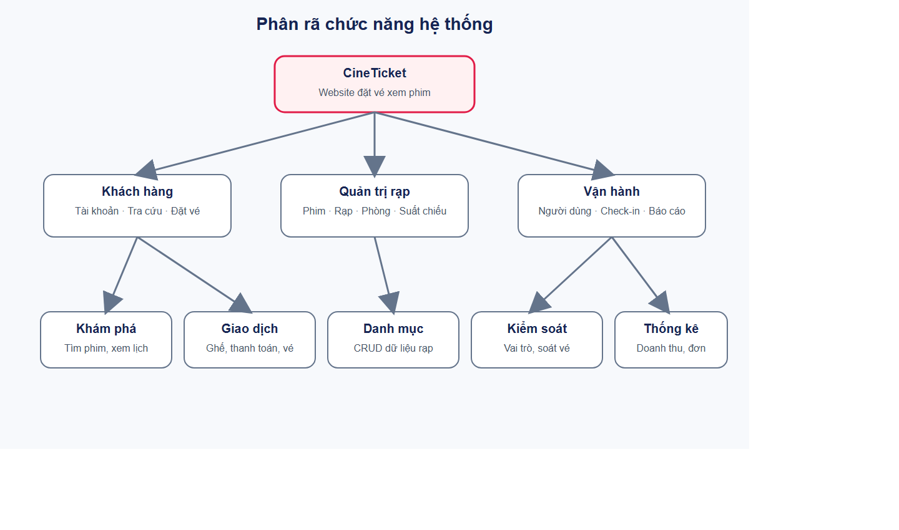
Use case bao gồm bốn role đã đăng nhập: CUSTOMER thực hiện luồng đặt vé và quản lý thông tin cá nhân; STAFF bán vé tại quầy và check-in; MANAGER vận hành danh mục/lịch chiếu, xem giao dịch và hỗ trợ quầy; ADMIN có thêm quyền quản lý người dùng. Khách chưa đăng nhập chỉ xem danh mục công khai. Đăng ký mới luôn tạo role CUSTOMER.
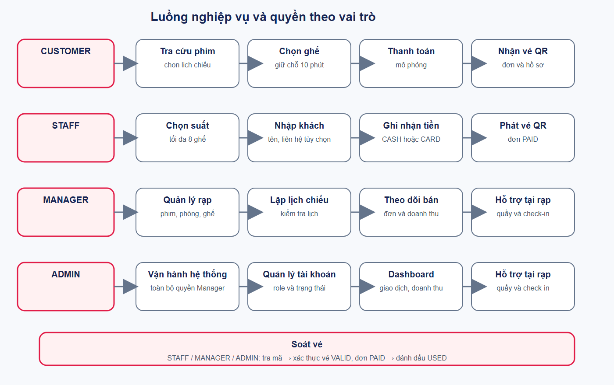
| Thuộc tính | Mô tả |
|---|---|
| Tác nhân chính | Khách hàng đã đăng nhập |
| Điều kiện đầu | Suất chưa bắt đầu, còn hoạt động; ghế thuộc đúng phòng |
| Luồng chính | Chọn phim → chọn suất → chọn ghế → gửi yêu cầu giữ chỗ → xác nhận đơn |
| Kết quả | Booking PENDING, tổng tiền theo số ghế, hạn giữ 10 phút |
| Ngoại lệ | Ghế đã giữ/bán; ghế không tồn tại; suất bị hủy/đã bắt đầu; gửi trùng ghế |
| Sau thanh toán | SUCCESS chuyển đơn PAID, ghế SOLD và tạo ticket cho từng ghế |
API giữ ghế loại bỏ ID ghế trùng và xác nhận từng ghế còn hoạt động, thuộc phòng của suất chiếu, chưa bán hoặc đang được giữ còn hạn. Backend khóa suất chiếu trong transaction để tuần tự hóa thao tác tạo booking có cạnh tranh.
Giao diện gửi POST /api/bookings với showtimeId và seatIds. BookingController xác thực người dùng từ JWT, khóa suất chiếu, đọc ghế và kiểm tra trạng thái. Khi hợp lệ, controller tạo booking, lưu từng BookingSeat và trả ID đơn, trạng thái, tổng tiền, thời điểm hết hạn.
Khi người dùng gửi yêu cầu thanh toán, PaymentController khóa đơn theo người sở hữu, kiểm tra trạng thái PENDING, thời hạn giữ và số tiền. Mã giao dịch duy nhất giúp chống ghi nhận trùng. Trường success trong request hiện đóng vai trò mô phỏng kết quả cổng thanh toán; hệ thống chưa gọi nhà cung cấp thanh toán thật.
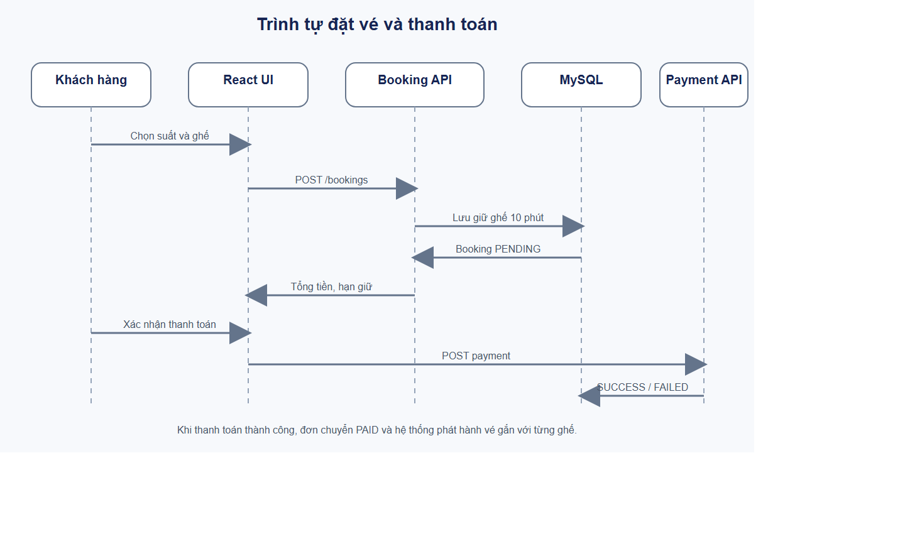
Luồng hoạt động chia thành nhánh hợp lệ và không hợp lệ. Nếu ghế không trống hoặc suất không thể đặt, API trả lỗi nghiệp vụ và frontend có thể yêu cầu người dùng chọn lại. Nếu hợp lệ, hệ thống tạo đơn chờ và phản hồi thời gian giữ để người dùng hoàn tất thanh toán trong giới hạn.
Job BookingExpiryJob chạy định kỳ 30 giây sau khoảng trễ khởi động ban đầu. Job tìm đơn PENDING quá hạn, cập nhật trạng thái EXPIRED và giải phóng các BookingSeat. Quy trình này giúp ghế được đặt lại sau khi người mua bỏ dở.
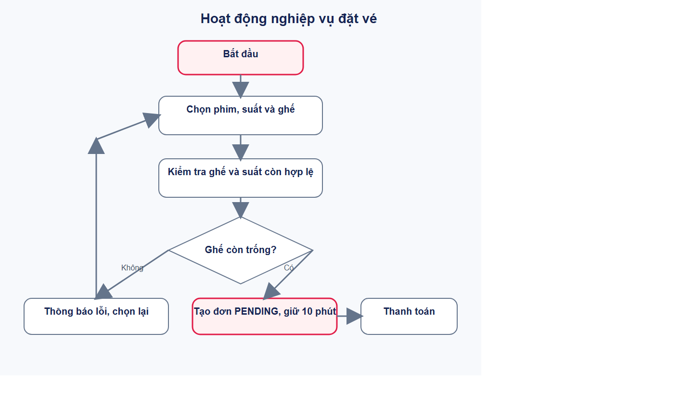
Các lớp nghiệp vụ trung tâm gồm User, Movie, Genre, Cinema, Room, Seat, Showtime, Booking, BookingSeat, Payment và Ticket. BaseEntity cung cấp khóa ID tự tăng cùng createdAt và updatedAt. Các trạng thái enum tách biệt vòng đời tài khoản, phim, suất, booking, giữ ghế, thanh toán và vé.
Mô hình tránh lưu danh sách ghế dưới dạng chuỗi trong Booking. Mỗi ghế được biểu diễn thành một dòng độc lập, từ đó có thể kiểm tra trùng ghế, giá từng chỗ và trạng thái giữ/bán.
Sơ đồ tập trung vào các liên kết chính phục vụ tra cứu danh mục và giao dịch. Các khóa ngoại hướng tới thực thể cha; bảng nối thể loại thể hiện quan hệ nhiều-nhiều. Quan hệ của ticket với booking_seat là một-một để mỗi ghế bán ra tạo một vé duy nhất.
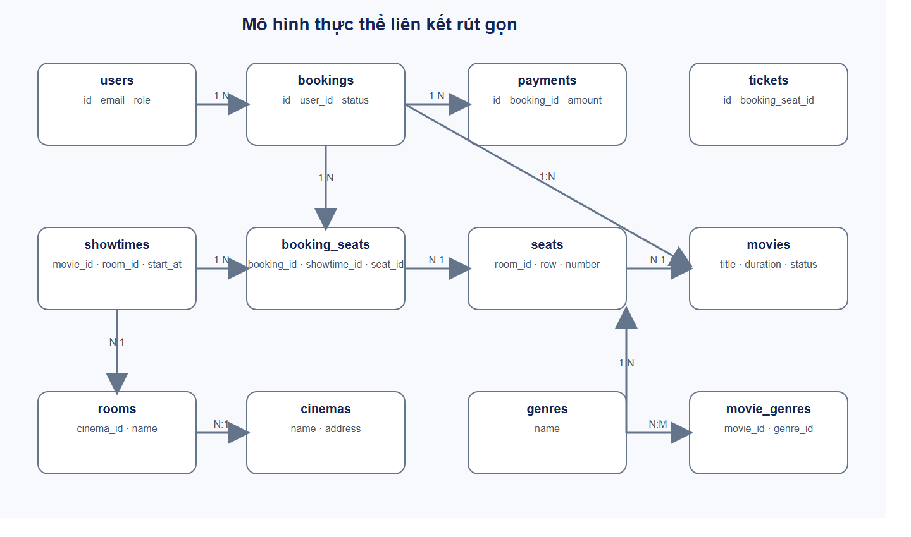
| Bảng | Trường tiêu biểu | Ràng buộc / ý nghĩa |
|---|---|---|
| users | id, full_name, email, password_hash, role, status | email duy nhất; role/status enum |
| movies | title, description, duration, release_date, status | title bắt buộc; description tối đa 4000 ký tự |
| genres | name, description | name duy nhất |
| movie_genres | movie_id, genre_id | bảng liên kết nhiều-nhiều |
| cinemas | name, address, phone, status | thông tin rạp |
| rooms | cinema_id, name, room_type, status | tên phòng duy nhất trong rạp |
Các entity kế thừa BaseEntity để có ID và dấu thời gian tạo/cập nhật. Email được chuyển về chữ thường khi bootstrap admin, và endpoint đăng ký kiểm tra email đã sử dụng. PasswordHash lưu chuỗi đã mã hóa thay vì mật khẩu ban đầu.
| Bảng | Trường tiêu biểu | Quy tắc |
|---|---|---|
| seats | room_id, row_label, seat_number, seat_type, active | mỗi vị trí chỉ một ghế trong phòng |
| showtimes | movie_id, room_id, start_at, end_at, base_price, status | thời gian kết thúc sau bắt đầu; không chồng lịch cùng phòng |
| booking_seats | booking_id, showtime_id, seat_id, unit_price, hold_status, hold_expires_at | trạng thái HELD/RELEASED/SOLD |
| showtime index | showtime_id, seat_id | hỗ trợ tra cứu ghế theo suất |
Ghế là dữ liệu thuộc phòng; trạng thái bận của ghế được tính theo booking seat đang giữ chưa hết hạn hoặc đã bán trong suất chiếu được chọn. Do đó cùng một ghế có thể AVAILABLE ở suất khác. Giá gốc của suất được sao chép vào đơn vị giá tại lúc tạo BookingSeat để giữ lại giá giao dịch.
| Bảng | Trường tiêu biểu | Vai trò |
|---|---|---|
| bookings | user_id, showtime_id, status, total_amount, hold_expires_at | đơn đặt vé và hạn giữ ghế |
| payments | booking_id, amount, method, status, transaction_ref, paid_at | ghi nhận kết quả thanh toán; transaction_ref duy nhất |
| tickets | booking_seat_id, ticket_code, status, issued_at, used_at | vé điện tử theo từng ghế; mã vé duy nhất |
Vòng đời dự kiến: booking PENDING → PAID khi thanh toán thành công; ghế HELD → SOLD; ticket được tạo VALID. Khi khách hủy hoặc hết hạn, booking chuyển CANCELLED/EXPIRED và ghế được RELEASED. Vé có thể chuyển USED khi check-in. Mã trạng thái cụ thể là enum trong entity.
Booking trực tuyến gắn với tài khoản khách. Booking tại quầy có thể không có user_id, lưu customer_name, customer_email, customer_phone và sold_by để giữ thông tin khách mua vãng lai cùng nhân viên chịu trách nhiệm. Migration database/20261113_counter_sales.sql nới user_id cho trường hợp này.
DTO nhận dữ liệu được đánh dấu validation ở các trường bắt buộc, số lượng ghế và giá. Các kiểm tra phụ thuộc nghiệp vụ nằm trong controller: ngày giờ suất phải trong tương lai; thời gian kết thúc hợp lệ; lịch trong cùng phòng không được chồng; ghế phải thuộc phòng của suất; người dùng chỉ thao tác với booking của mình.
Thông báo nghiệp vụ thường có code ổn định để frontend xử lý. Dữ liệu lỗi đầu vào cần được kiểm tra ở server kể cả khi frontend đã kiểm tra để tránh request tự tạo ngoài giao diện.
Frontend gọi các tuyến /api qua proxy của Vite trong phát triển. Backend Spring Boot chạy cổng 8080, kết nối MySQL qua JDBC. Swagger UI được bật mặc định trong môi trường phát triển để khám phá API. File compose.yaml mô tả các container MySQL, backend và frontend cho triển khai Docker.
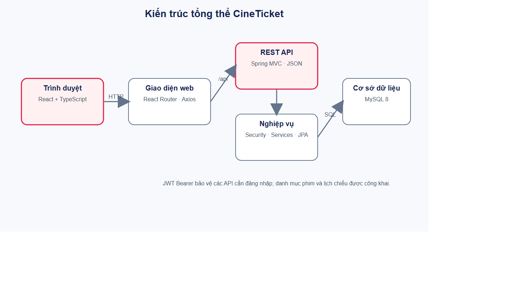
Trong lần chạy phục vụ báo cáo, frontend Vite chạy tại http://127.0.0.1:5173, backend Spring Boot tại http://localhost:8080 và MySQL 8 trên cổng mặc định 3306. Kết nối thực tế thành công và Hibernate khởi tạo persistence unit. Docker Compose không được dùng trong lần chụp vì Docker Engine trên máy chưa hoạt động; MySQL cài trực tiếp đã chạy.
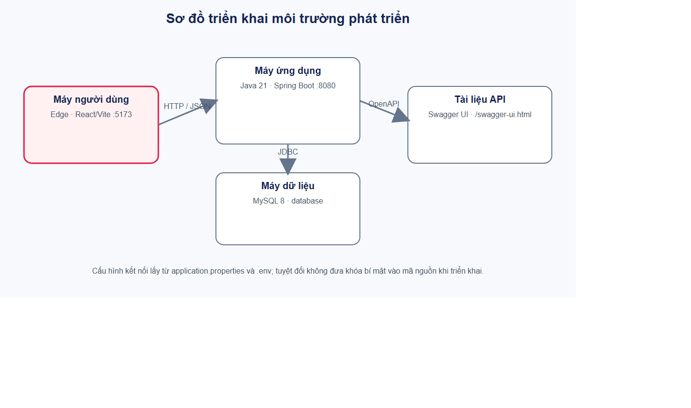
Chương này trình bày cấu trúc project, cấu hình chạy, các màn hình đã chụp và nhóm endpoint chính. Ảnh minh họa được chụp ở độ phân giải 1440 × 1100 từ trình duyệt Edge khi frontend và backend chạy trên máy cá nhân.
Dữ liệu thử giao diện được tạo qua API quản trị: một thể loại, hai phim, một cụm rạp, một phòng, 40 ghế và các suất chiếu mẫu. Không có giao dịch mua vé thật được thực hiện trong quá trình tạo báo cáo. Màn hình cho thấy dữ liệu danh mục và giờ chiếu thực tế do backend trả về.
| Thư mục | Nội dung |
|---|---|
| src/main/java/ticket2/controller | REST controller và xử lý request |
| src/main/java/ticket2/dto | DTO request/response và validation |
| src/main/java/ticket2/entity | Entity, enum trạng thái và quan hệ |
| src/main/java/ticket2/repository | Truy vấn Spring Data JPA |
| src/main/java/ticket2/config | Security, JWT, OpenAPI |
| src/main/java/ticket2/service | Khởi tạo admin và dọn booking quá hạn |
| frontend/src/pages | Các trang khách hàng và quản trị |
| frontend/src/services | Axios và hàm gọi API |
| frontend/src/context | Trạng thái xác thực dùng chung |
pom.xml khai báo backend và frontend/package.json liệt kê script dev, build và lint. API.md ghi mô tả endpoint cho nhóm giao diện. File .env cấu hình kết nối tại máy, nên không đưa thông tin bí mật của file này vào tài liệu hoặc commit công khai.
Ứng dụng dùng MySQL database webbanvexemphim. Các biến DB_URL, DB_USERNAME và DB_PASSWORD có thể đặt trong file .env. Cấu hình datasource bật tùy chọn tạo database nếu chưa tồn tại. Hibernate ddl-auto=update tự tạo/cập nhật bảng trong môi trường phát triển.
Khi khởi động, Spring tạo DataSource, kiểm tra kết nối rồi khởi tạo EntityManagerFactory. AdminAccountInitializer có thể tạo hoặc nâng vai trò tài khoản quản trị dựa vào biến ADMIN_EMAIL và ADMIN_PASSWORD. Bootstrap này chỉ dùng cấu hình mẫu trong môi trường do nhóm kiểm soát; không dùng mật khẩu mẫu khi triển khai công khai.
Đề nghị điền lại thông tin kết nối phù hợp máy chấm, kiểm tra database trước khi chạy và sao lưu dữ liệu nếu muốn giữ các tài khoản đang có. Không xóa database tùy tiện vì có thể mất dữ liệu ngoài phạm vi báo cáo.
Trang chủ hiển thị thanh điều hướng, phim nổi bật, trạng thái đang chiếu/sắp chiếu, tìm kiếm theo tên hoặc đạo diễn và bộ lọc thể loại. Người dùng có thể mở chi tiết hoặc chuyển tới thao tác đặt vé từ phim nổi bật. Layout toàn trang có footer chứa nhóm liên kết khám phá, hỗ trợ và liên hệ.
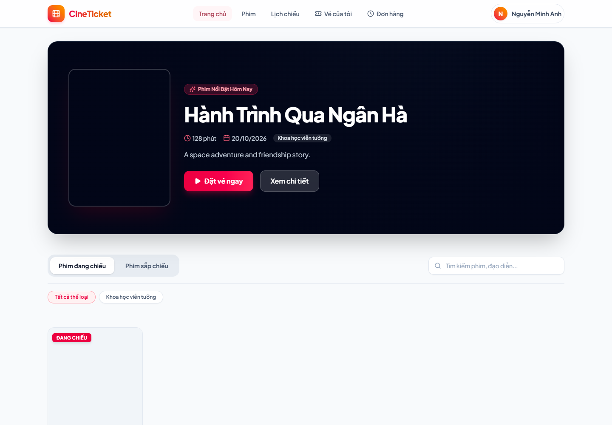
Trang danh mục cho phép chuyển giữa tất cả phim, đang chiếu và sắp chiếu; tìm theo tên phim/diễn viên và lọc theo thể loại. Mỗi thẻ hiển thị ảnh poster, nhãn trạng thái, thời lượng, tên và ngày phát hành. Khi poster rỗng hoặc tải lỗi, giao diện dùng ảnh dự phòng.
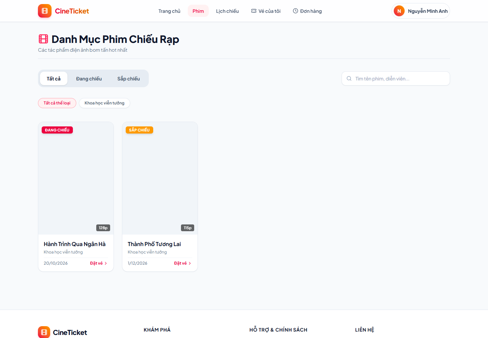
Trang chi tiết tải đối tượng theo ID, trình bày phần giới thiệu và dữ liệu phim, đồng thời mở luồng chọn lịch. Dữ liệu mô tả được quản trị viên cung cấp. Mã nguồn có trang riêng cho chi tiết và tuyến /movies/:id; route này giúp chia sẻ đường dẫn tới một phim cụ thể.
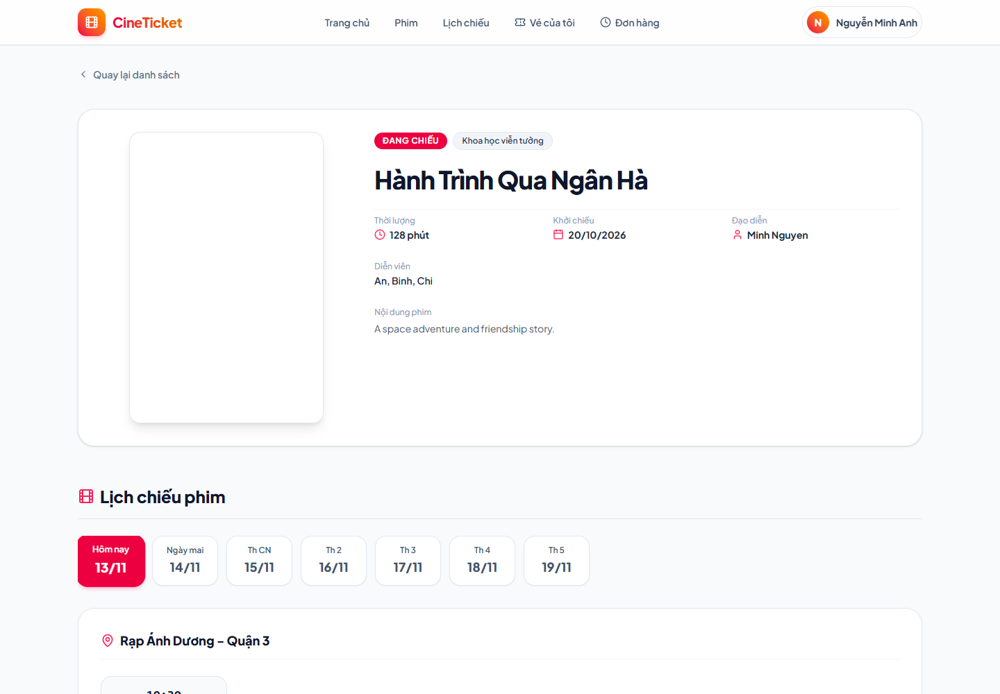
Người dùng chọn ngày trong dải bảy ngày, sau đó chọn suất chiếu phù hợp theo rạp, phim, phòng và giá. Nhấn vào suất sẽ chuyển sang sơ đồ ghế của đúng phòng và suất đó.
Trong quá trình kiểm tra phát hiện ngày truy vấn bị lùi một ngày do chuyển Date thành ISO UTC tại múi giờ Asia/Bangkok. Giao diện đã chuyển sang định dạng ngày địa phương yyyy-MM-dd. Ảnh ghi lại lịch ngày mai tại Rạp Ánh Dương - Quận 3.
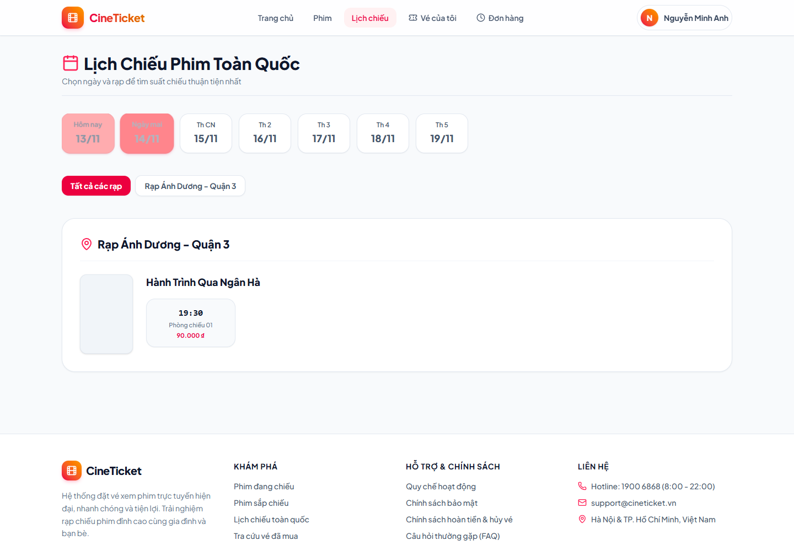
Trang xác thực hỗ trợ chế độ đăng nhập và đăng ký trên cùng một component. Đăng nhập gọi POST /api/auth/login; đăng ký gọi POST /api/auth/register rồi đăng nhập tự động. Khi xác thực thành công, giao diện lưu user và token trong localStorage. Token được gắn vào request tiếp theo qua Axios interceptor.
Backend chuẩn hóa email, mã hóa mật khẩu bằng BCrypt và từ chối email trùng hoặc thông tin đăng nhập sai. Token có hạn một giờ; nếu server trả 401, frontend xóa thông tin phiên hiện tại để người dùng đăng nhập lại.
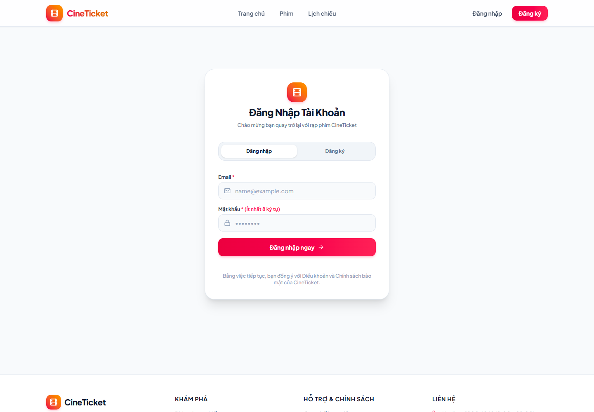
Từ trang lịch chiếu, khách chọn suất 19:30 ngày mai để mở sơ đồ ghế. Màu sắc phân biệt ghế thường, VIP, đang chọn, đang được giữ và đã bán. Ghế đã bán hoặc đang giữ không thể chọn; tổng tiền được cập nhật khi khách chọn ghế còn trống.
Sau khi chọn ghế A4, khách nhấn “Tiếp tục thanh toán”. Website gửi yêu cầu tạo đơn; backend xác nhận lại ghế còn trống và giữ ghế trong 10 phút. Trang thanh toán hiển thị mã đơn, suất, ghế, tổng tiền và thời gian giữ còn lại.
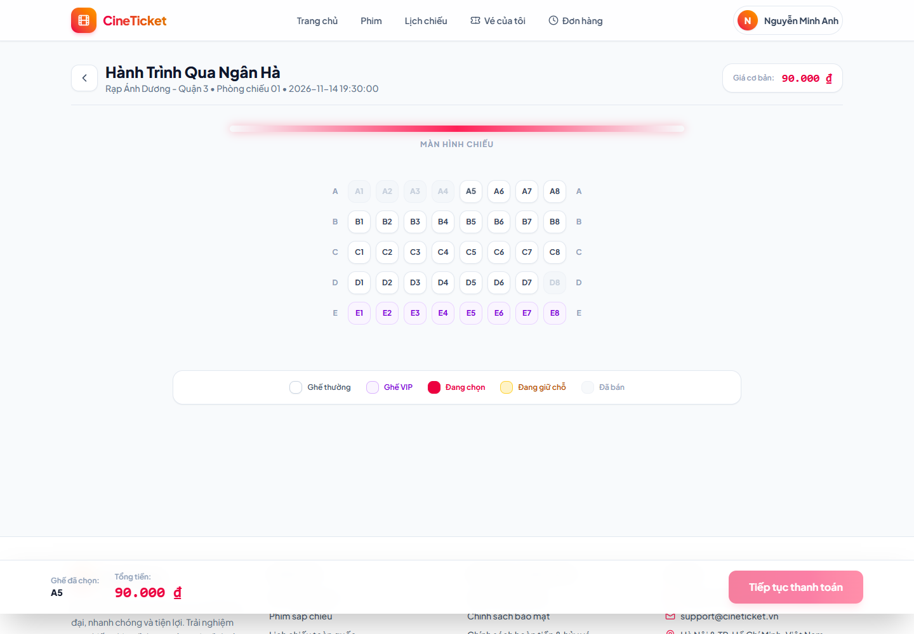
Tại trang thanh toán, khách kiểm tra lại thông tin đơn rồi nhấn “Xác nhận thanh toán ngay”. Đây là cổng thanh toán mô phỏng; backend kiểm tra chủ sở hữu đơn, thời hạn giữ ghế và số tiền. Thanh toán thành công chuyển đơn sang PAID, ghế sang SOLD và tạo một vé cho mỗi ghế.
Sau khi thanh toán, khách mở “Vé của tôi” để xem mã vé, phim, rạp, suất và ghế. Trang “Đơn hàng” lưu trạng thái giao dịch; trang hồ sơ cho phép xem và cập nhật thông tin cá nhân. Các màn hình dưới đây được chụp sau khi chạy trực tiếp luồng trên web.
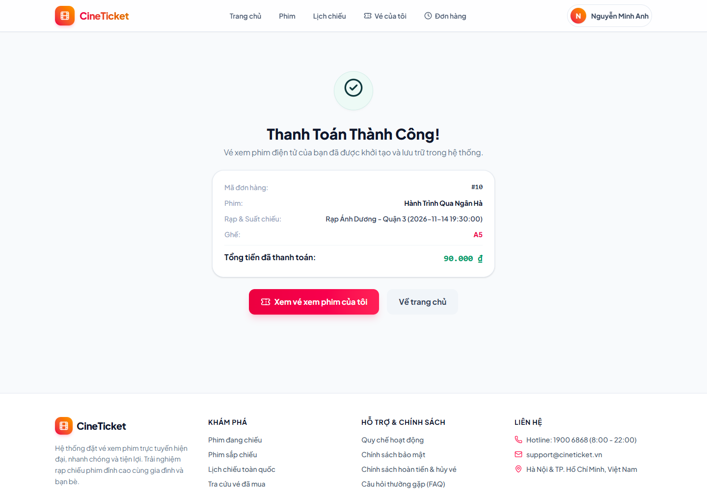
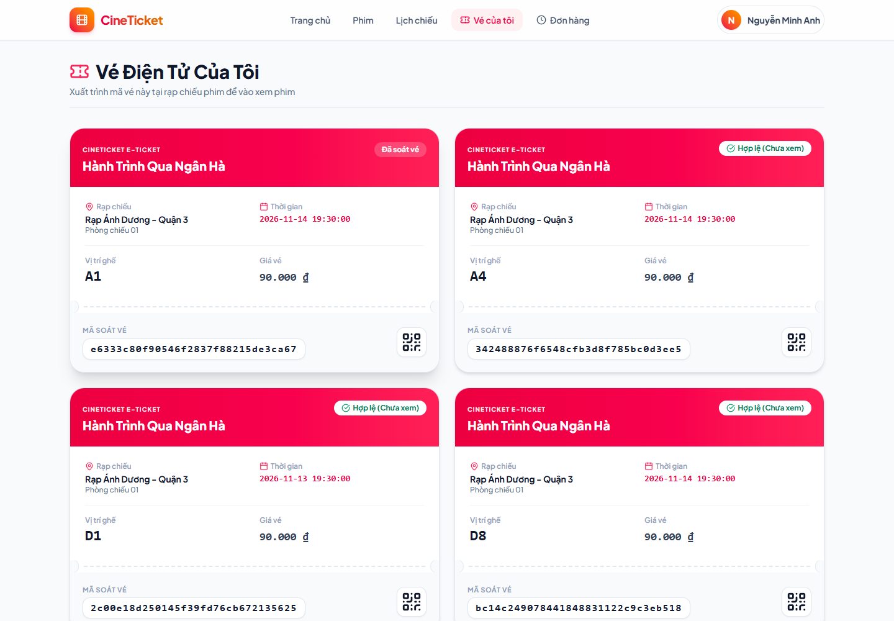
Sau khi thanh toán hoặc hủy đơn, khách mở mục “Đơn hàng” để xem mã đơn, thời gian tạo, suất chiếu, tổng tiền và trạng thái. Khách chỉ xem được đơn thuộc tài khoản của mình; các đơn đã thanh toán giữ trạng thái PAID, đơn bị hủy hiển thị CANCELLED.
Luồng này giúp khách kiểm tra lại giao dịch trước khi mở vé điện tử. Đơn PENDING còn trong thời hạn giữ ghế có thể tiếp tục thanh toán; đơn đã hết hạn hoặc đã hủy không thể sử dụng để vào rạp.
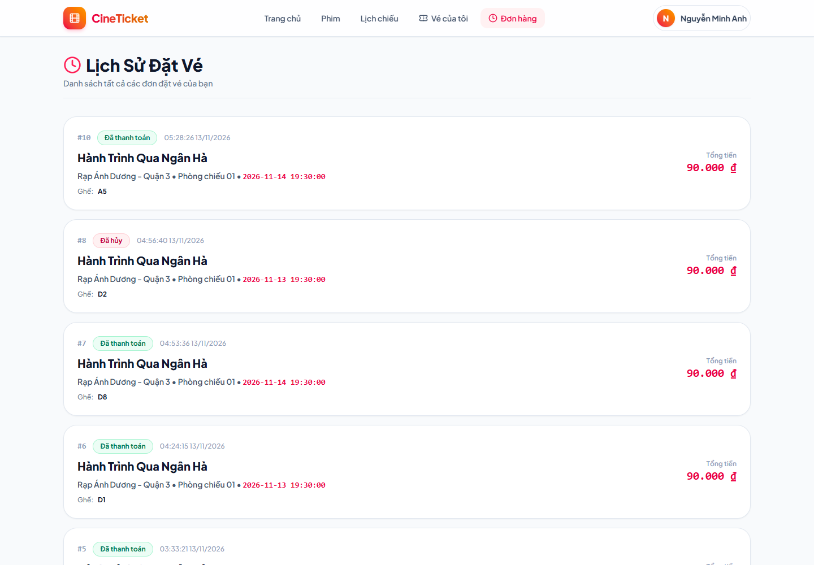
Trang hồ sơ hiển thị thông tin tài khoản hiện tại. Khách có thể cập nhật họ tên và số điện thoại; email đăng nhập được dùng làm định danh tài khoản. Các thao tác yêu cầu token đăng nhập và backend chỉ cho phép cập nhật hồ sơ của chính người dùng đó.
Khi đăng xuất, giao diện xóa phiên localStorage và điều hướng về trang công khai. Nếu token hết hạn, request được máy chủ trả 401 và giao diện yêu cầu đăng nhập lại.
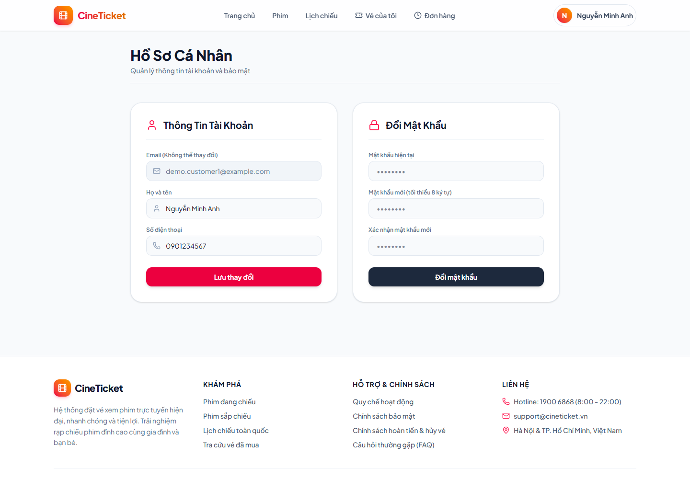
STAFF đăng nhập bằng tài khoản nhân viên, mở chức năng kiểm tra vé và nhập mã vé điện tử. Backend xác minh vé tồn tại, đã thanh toán, chưa sử dụng và thuộc suất chiếu tương ứng. Vé hợp lệ được chuyển sang USED sau thao tác check-in; quét lại vé đã dùng sẽ bị từ chối.
Vai trò CUSTOMER không được gọi API check-in. MANAGER có quyền vận hành rạp nhưng không quản lý tài khoản; ADMIN có quyền quản lý tổng thể và cũng có thể hỗ trợ kiểm tra vé khi cần.
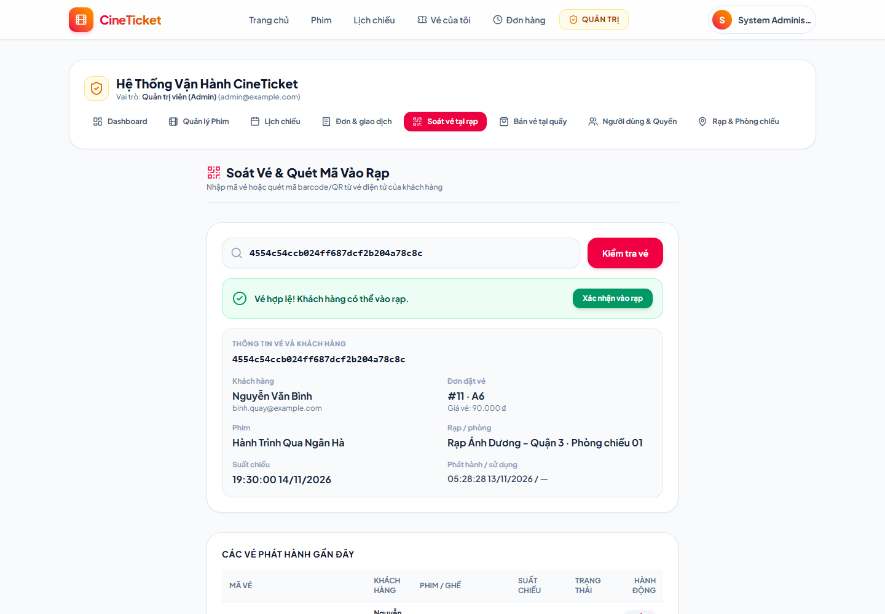
MANAGER sử dụng khu vực quản lý để tạo, xem, sửa và xóa dữ liệu phim theo các ràng buộc của backend. Thông tin phim gồm tiêu đề, mô tả, thời lượng, ngày phát hành, trạng thái và thể loại. Dữ liệu sau khi lưu xuất hiện ở danh mục công khai để khách tra cứu.
Quản lý rạp, phòng và ghế cũng thuộc nhóm vận hành. Backend kiểm tra các quan hệ dữ liệu trước khi lưu; những suất chiếu đã phát sinh giao dịch cần được xử lý theo ràng buộc nghiệp vụ.
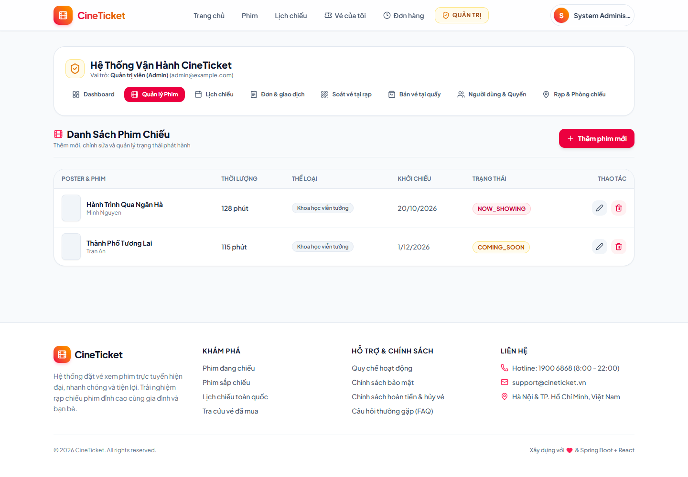
Trang “Rạp & Phòng chiếu” hiển thị danh sách rạp, trạng thái, địa chỉ và các phòng thuộc rạp đang chọn. ADMIN/MANAGER có thể thêm rạp với tên, địa chỉ, số điện thoại; thêm phòng với tên, loại phòng và trạng thái. Màn hình phòng thể hiện loại phòng, tình trạng và xác nhận đã khởi tạo ghế.
Trong dữ liệu demo, phòng chiếu 01 có 40 ghế: 5 hàng A–E, mỗi hàng 8 ghế; hàng C và D là VIP, các hàng còn lại là ghế thường. Trang hiện tại quản lý rạp/phòng và tạo ma trận ghế khi lập phòng; API ghế riêng hỗ trợ tạo/cập nhật từng ghế gồm hàng, số ghế, loại và trạng thái hoạt động. Giao diện hiện chưa có bảng riêng để xem chi tiết từng ghế.
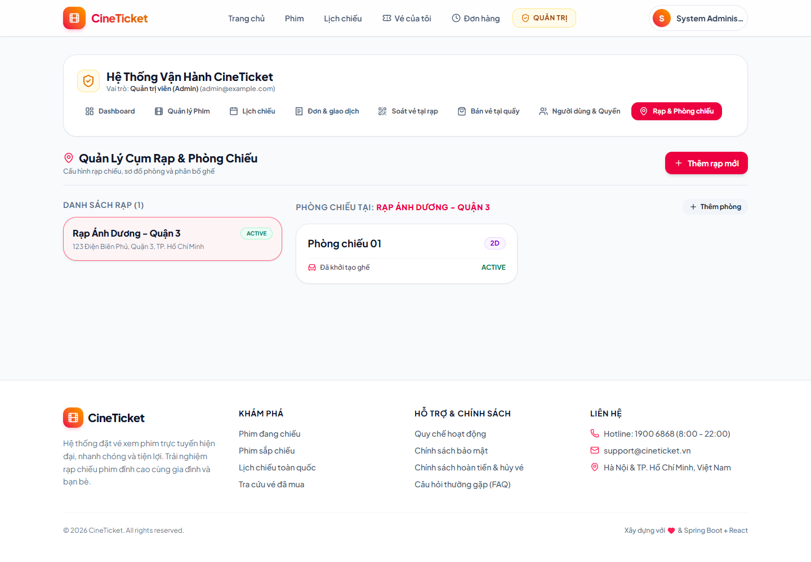
Manager tạo và cập nhật lịch chiếu gắn với phim và phòng. Hệ thống kiểm tra thời gian bắt đầu/kết thúc, giá vé, phòng và xung đột lịch trước khi lưu; màn hình lịch chiếu công khai lấy dữ liệu này để khách đặt vé.
Mỗi suất chiếu liên kết một phim, một phòng, thời gian bắt đầu/kết thúc, giá cơ bản và trạng thái. Hủy suất sẽ hủy các booking PENDING gắn với suất đó; dữ liệu giao dịch đã hoàn tất được bảo toàn theo quy tắc nghiệp vụ.
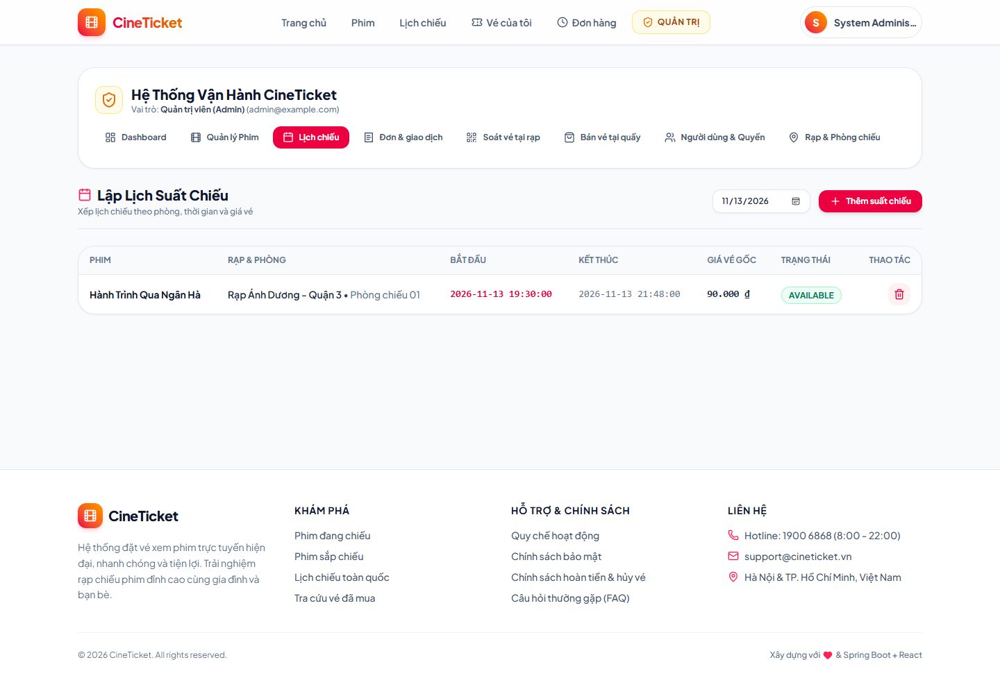
ADMIN tra cứu danh sách tài khoản, xem ID, họ tên, email, số điện thoại, trạng thái và vai trò. Tài khoản trong hệ thống được chia thành CUSTOMER, STAFF, MANAGER và ADMIN. ADMIN có thể khóa/mở tài khoản hoặc đổi vai trò; trang này chỉ dành cho ADMIN.
Tách quyền giúp nhân viên chỉ thực hiện check-in, quản lý rạp tập trung vào dữ liệu vận hành, khách hàng giới hạn ở hồ sơ và giao dịch cá nhân. Backend kiểm tra quyền trên từng API, vì vậy ẩn nút trên giao diện không phải là lớp bảo vệ duy nhất.
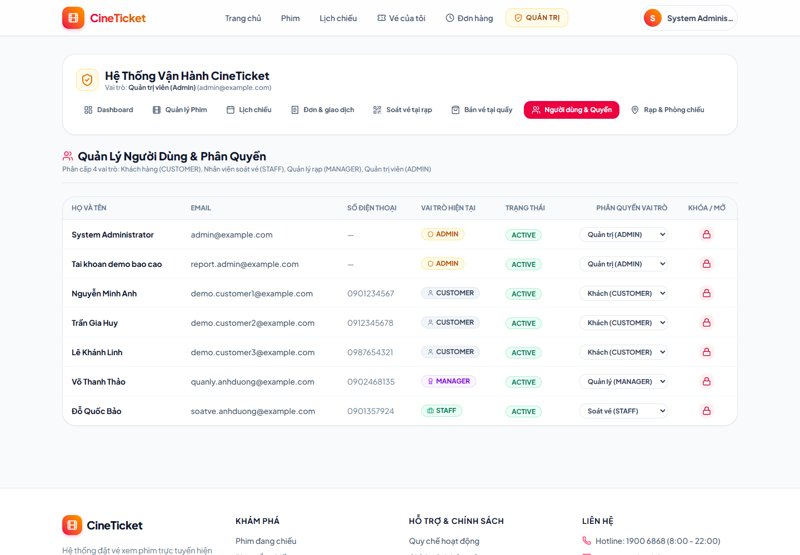
Màn hình giao dịch tổng hợp booking, payment và vé trong cùng một khu vực. Đơn tại quầy lưu tên/liên hệ khách vãng lai, kênh bán COUNTER và nhân viên thực hiện; đơn trực tuyến tiếp tục liên kết với tài khoản người mua. Danh sách cho phép tìm khách, lọc trạng thái và mở chi tiết từng giao dịch.
| Đơn | Kênh / khách | Ghế / thanh toán | Kết quả |
|---|---|---|---|
| #11 | Quầy · Nguyễn Văn Bình · Đỗ Quốc Bảo | A6 · CASH · 90.000đ | PAID · vé VALID |
| #10 | Online · Nguyễn Minh Anh | A5 · MOCK · 90.000đ | PAID · vé VALID |
| #9 | Quầy · khách vãng lai · Đỗ Quốc Bảo | D2 · CASH · 90.000đ | PAID · vé VALID |
| #4 | Online · Lê Khánh Linh | A4 · MOCK thất bại | CANCELLED · không phát vé |
Tại thời điểm chụp, cơ sở dữ liệu có 11 đơn: 8 PAID và 3 CANCELLED; 9 payment gồm 8 SUCCESS và 1 FAILED; có 9 vé gồm 7 VALID và 2 USED. Doanh thu từ payment SUCCESS là 810.000 đồng. Số liệu lấy từ database demo sau khi chụp luồng mua online và bán vé tại quầy.
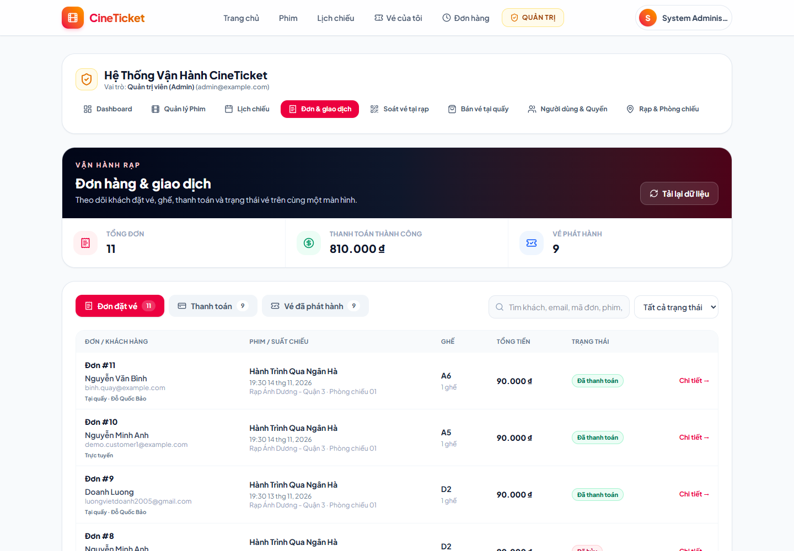
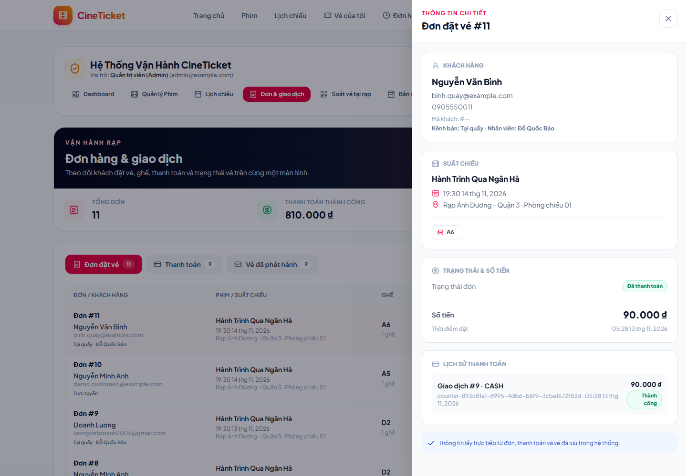
Dashboard tổng hợp doanh thu trong khoảng ngày được chọn, số vé đã bán và số đơn theo trạng thái. Số liệu được truy vấn từ các bản ghi booking, payment và ticket đang lưu, giúp ADMIN/MANAGER xem nhanh hoạt động hệ thống.
| Nhóm API quản trị | Dữ liệu/chức năng | Quyền |
|---|---|---|
| Phim, thể loại | Danh sách, tạo, sửa, ẩn/xóa thể loại | ADMIN, MANAGER |
| Rạp, phòng, ghế | Thông tin rạp, cấu hình phòng và ghế | ADMIN, MANAGER |
| Suất chiếu | Danh sách, tạo, sửa, hủy và kiểm tra trùng lịch | ADMIN, MANAGER |
| Người dùng | Thông tin tài khoản, khóa/mở, đổi role | ADMIN |
| Đơn, thanh toán, vé | Tra cứu chi tiết booking/payment/ticket | ADMIN qua API |
| Check-in | Kiểm tra mã vé và đánh dấu đã sử dụng | ADMIN, MANAGER, STAFF |
| Dashboard | Doanh thu, vé bán, trạng thái đơn | ADMIN, MANAGER |
Các endpoint quản trị được mô tả chi tiết trong API.md và Swagger UI tại http://localhost:8080/swagger-ui.html. Khu vực người dùng không hiển thị chức năng mà role hiện tại không được phép truy cập.
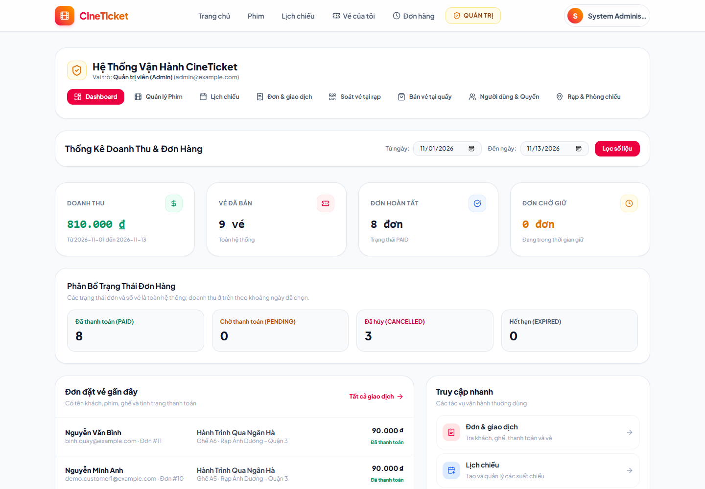
| Hạng mục | Kết quả ghi nhận |
|---|---|
| Backend và MySQL | API cổng 8080 kết nối cơ sở dữ liệu |
| Frontend | Website cổng 5173 chạy trên Edge |
| Tài khoản và quyền | ADMIN, MANAGER, STAFF, CUSTOMER vào đúng khu vực |
| Mua online | Chọn phim/suất/ghế → giữ chỗ → mock payment → vé QR |
| Bán tại quầy | STAFF chọn suất/ghế, lưu khách vãng lai, thu tiền và phát QR |
| Vận hành | Quản lý danh mục, xem doanh số, soát vé/check-in |
| Dữ liệu giao dịch | 11 đơn: 8 PAID, 3 CANCELLED; 9 payment: 8 SUCCESS, 1 FAILED; 9 vé: 7 VALID, 2 USED |
| Ảnh giao diện | Chụp trực tiếp từ app, lưu tại report/screenshots |
Bản ghi trong database cho thấy cùng một suất chiếu có thể được bán trực tuyến hoặc tại quầy; ghế bán ra chuyển SOLD, payment ghi nhận phương thức và mỗi ghế có một mã vé duy nhất. Payment trực tuyến là mô phỏng; tại quầy, CASH/CARD ghi nhận nhân viên đã thu tiền.
Khách mua trực tiếp không cần tài khoản CineTicket. Nhân viên STAFF mở màn hình Bán vé tại quầy, chọn ngày, suất và ghế còn trống, nhập tên khách cùng số điện thoại hoặc email nếu khách cung cấp, rồi ghi nhận tiền mặt hoặc khoản thẻ đã thu. Backend khóa suất chiếu khi kiểm tra ghế, tạo booking PAID, ghi nhân viên bán và phương thức thanh toán, sau đó phát một mã vé QR cho từng ghế.
Màn hình hoàn tất hiển thị tổng thu, tên nhân viên, mã QR và mã vé để nhân viên đưa khách xem hoặc in. Đơn bán tại quầy xuất hiện trong báo cáo giao dịch, có thể tìm theo tên khách và phân biệt với đơn trực tuyến. Phương thức CARD hiện chỉ ghi nhận thao tác thu tiền tại quầy; ứng dụng chưa kết nối máy POS hoặc ngân hàng.
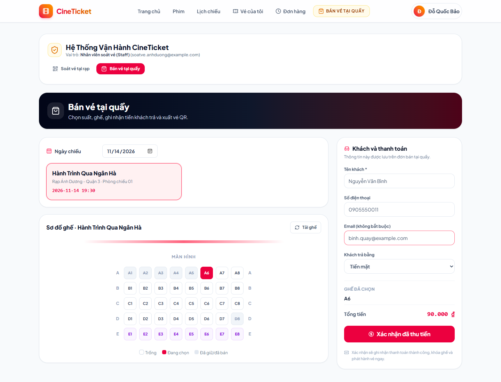
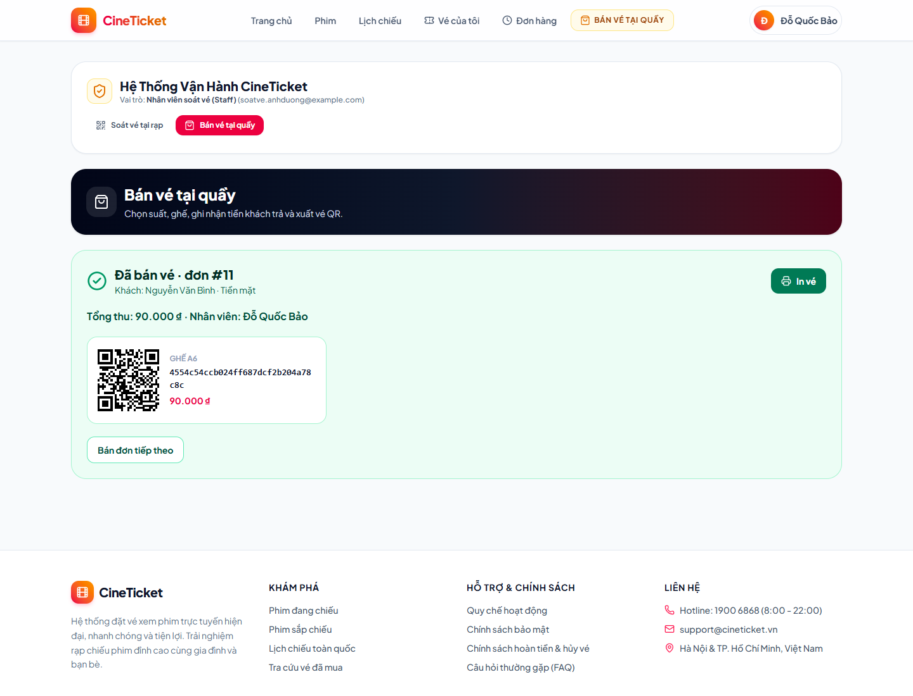
Đề tài xây dựng được một ứng dụng web đặt vé xem phim có tách frontend/backend, API REST, xác thực JWT, phân quyền theo vai trò và cơ sở dữ liệu quan hệ. Các màn hình người dùng phục vụ tra cứu phim, xem lịch, đăng nhập, chọn ghế, xem đơn và vé. Nhóm quản trị có các route vận hành danh mục, lịch chiếu, người dùng, check-in và dashboard.
Các kết quả cụ thể gồm: mô hình entity và quan hệ; kiểm tra dữ liệu đầu vào; giữ ghế theo suất; thời gian giữ tối đa 10 phút; quy trình mô phỏng thanh toán và phát hành vé; API tài liệu; ảnh chụp giao diện thật. Hai lỗi chạy quan trọng được xử lý trong quá trình kiểm chứng: thiếu ObjectMapper cho JWT, tải thể loại lazy và lệch ngày do UTC ở màn lịch.
Phạm vi thực hiện phù hợp đồ án môn học nhưng cần hoàn thiện kiểm thử giao dịch, nội dung tài khoản, thông tin nhóm và môi trường triển khai trước khi nộp hoặc giới thiệu cho người dùng bên ngoài.
Hệ thống có hai kênh bán vé: khách tự đặt trên website và nhân viên bán trực tiếp tại quầy. Đơn quầy lưu thông tin khách không cần tài khoản, nhân viên bán, phương thức thu tiền, ghế và các vé QR đã phát hành.
| Hạn chế hiện tại | Hướng phát triển |
|---|---|
| Thanh toán mô phỏng bằng trường success trong request | Tích hợp cổng thanh toán sandbox, xác thực webhook và đối soát |
| Không gửi email xác nhận hoặc khôi phục mật khẩu | Thêm email OTP, mẫu thư và quy trình reset mật khẩu |
| DDL Hibernate tự cập nhật schema | Dùng Flyway/Liquibase và quy trình backup/restore |
| Chưa có kiểm thử đầy đủ cho cạnh tranh đặt cùng ghế | Bổ sung integration test và kiểm thử tải song song |
| CORS và secret cần cấu hình riêng trước production | Dùng profile, secret manager, TLS và giới hạn domain |
| Dashboard tổng hợp trực tiếp từ dữ liệu giao dịch | Tối ưu truy vấn, phân trang và chỉ mục theo quy mô |
| Ảnh poster demo có thể dùng ảnh dự phòng | Bổ sung kho ảnh hợp pháp và kiểm tra URL tải ảnh |
Mở rộng theo hướng trên giúp hệ thống an toàn và có khả năng vận hành thực tế hơn. Cần ưu tiên xác thực webhook và kiểm soát tranh chấp ghế trước khi nhận thanh toán thật.
Thanh toán quầy hiện ghi nhận nhân viên đã nhận tiền mặt hoặc thẻ; chưa tích hợp máy POS. Vé QR hiển thị để đưa khách xem/in, chưa có chức năng gửi vé qua email.
Các endpoint API có thể xem tại Swagger UI khi ứng dụng backend đang chạy: http://localhost:8080/swagger-ui.html. Tài liệu endpoint nội bộ: API.md ở thư mục gốc project.
Điều kiện: JDK 21, Node.js phù hợp phiên bản trong project, MySQL đang chạy và database có thông tin kết nối hợp lệ. File .env chứa DB_URL, DB_USERNAME, DB_PASSWORD, JWT_SECRET cùng thông tin bootstrap admin; không chia sẻ file này công khai.
Trong lần chụp báo cáo, Docker Engine không khởi động nên ứng dụng dùng MySQL cài sẵn trên máy. Khi chạy máy khác, cần đổi thông tin cấu hình cho phù hợp và bảo đảm port không bị ứng dụng khác sử dụng.
Dashboard lấy doanh thu từ các payment SUCCESS theo ngày thu tiền. Tại thời điểm chụp, doanh thu là 810.000 đồng; hệ thống có 9 vé đã bán, 8 đơn PAID và 3 đơn CANCELLED. Số liệu bao gồm cả đơn trực tuyến và giao dịch quầy.
Danh sách phim và thao tác quản lý phim được trình bày tại mục 3.13; lịch chiếu được trình bày tại mục 3.14.